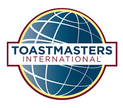

|  | WHERE LEADERS ARE MADE | Home | About Us | Events | Register | Contact Us | |
|---|
Toastmasters International is a nonprofit educational organization that teaches public speaking and leadership skills through a worldwide network of clubs. Headquartered in Englewood, Colo., the organization's membership exceeds 358,000 in more than 16,800 clubs in 143 countries. Since 1924, Toastmasters International has helped people from diverse backgrounds become more confident speakers, communicators, and leaders.
Members pay international dues of $45 USD every six months, plus a new member fee of $20. With Toastmasters, the learning never stops.
Join Toastmasters and you will:
 | Improve your public speaking skills | Build Leadership Skills |
Maximize your potential | Enjoy unlimited personal growth |
|||
Working on networking in a small and supportive enviornment |
Practice writing speeches and presenting in group setting |
Gain a competetive advantage in the workplace |
Build self-confidence and self-awareness |
Everything in Toastmasters revolves around the club. With a network of 16,800 clubs across 143 countries, you are sure to find one near you! Most clubs have around 20 members and meet once a week for an hour. For a preview of what the club experience is like, watch this video by clicking on the link below.
Each club features a unique culture, so there's no pressure to join the first club you visit!
Attending club meetings as a guest is free, so visit as many as you like until you find a club that fits your personality.